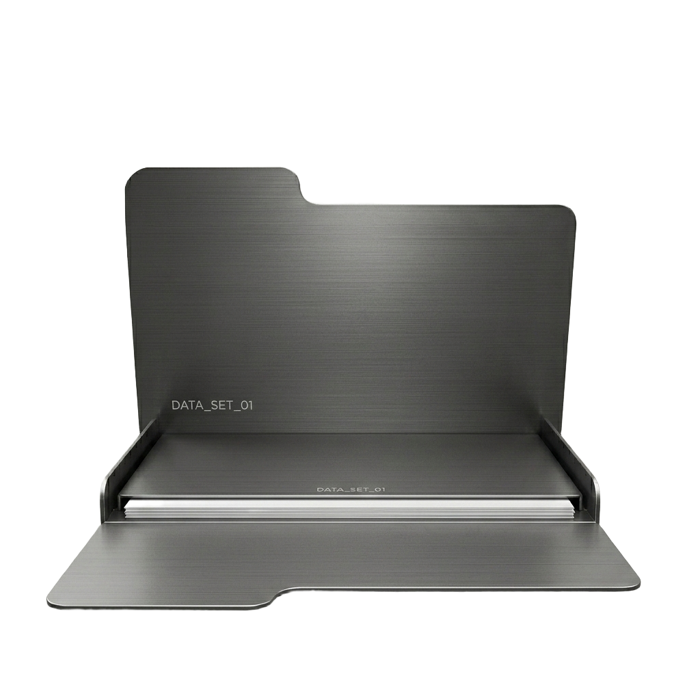
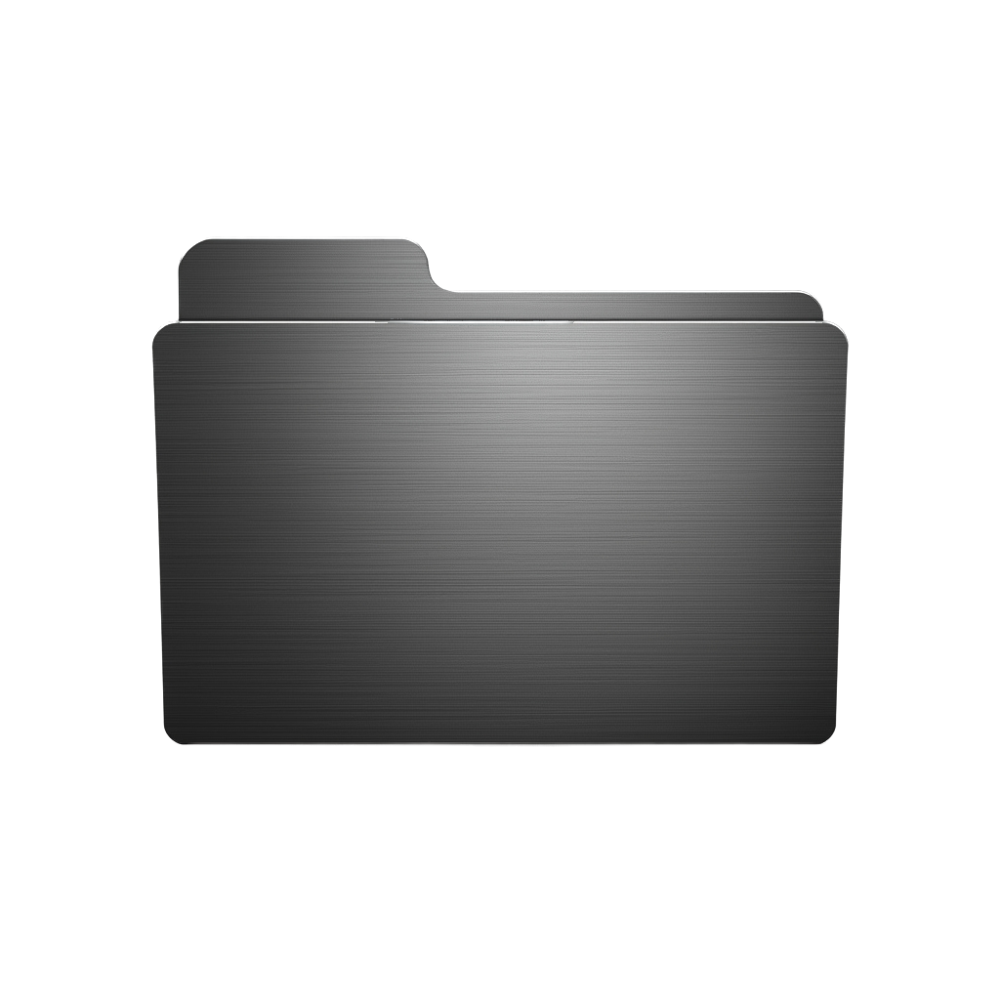

Islam Mihoub / CHRL
Computer Science student and digital builder from Algeria. I operate at the intersection of systems engineering and interface design. My core focus is building functional logic matched with uncompromising visual aesthetics.
Architecture & Interfaces
Good engineering requires scalable architecture; good design requires silent intuition. I treat code and graphics as a unified system, building out the backend logic while ensuring the frontend remains extremely sharp, minimal, and fast.
Systems & Performance
Fascinated by AI, system integrations, and the mechanics of modern tooling. Outside of UI loops, I study the engineering behind military aviation and jets—drawn to machines strictly built for peak efficiency and pure performance.
Analog Environment
Deeply invested in physical spaces. Hiking and exploring natural environments provide the baseline reset away from the IDE. I balance intense structural coding blocks with gaming and drawing to maintain visual creativity.
Complexity Through Simplicity
Create. Optimize relentlessly. Refine until the underlying complexity is totally invisible to the user. I believe digital work shouldn't just be functional—it should retain a core aesthetic cool factor that entirely separates it from generic templates.
